Teoria obwodów — kompendium z omówionymi zadaniami
Wszystko, co jest w Testach 1 (2019–2026), z konkretnymi pytaniami z kluczy i pełnym omówieniem odpowiedzi
Jak czytać ten dokument
Każdy rozdział ma trzy warstwy:
- Teoria — definicje i prawa, wystarczające do rozwiązania każdego zadania z tej grupy.
- Zadania z kluczy — wycinek oryginalnego pytania (z pogrubioną odpowiedzią prawidłową), dosłowna treść i wszystkie opcje.
- Omówienie odpowiedzi — dlaczego zaznaczona odpowiedź jest prawidłowa, skąd biorą się pozostałe (dystraktory) i jak sprawdzić wynik.
Sygnatura 25Z_A_1 · A oznacza: plik PELP1_25Z_A_1_klucz.pdf, pytanie A. Pliki leżą w katalogu głównym repozytorium.
Wszystkie liczby są przeliczone od zera i zgadzają się z odpowiedziami w kluczach. Tam, gdzie klucz dopuszcza więcej niż jedną odpowiedź, jest to napisane wprost (klucze mają tę właściwość, że każde pytanie może mieć kilka odpowiedzi prawidłowych).
Podstawa: 132 pytania z 17 kluczy Testu 1 (+ 7 pytań kolokwium przykładowego)
Materiał to wszystkie pytania Testu 1: 132 pytania z 17 kluczy (2019–2026) plus 7 pytań z kolokwium przykładowego PELP1_demo_A, razem 139 pytań. Pozostałe 18 kluczy w repozytorium to Test 2 (miernictwo) — omówiony w kompendium/ i szybkie/. Szkielet Testu 1 jest zawsze ten sam: 6–8 pytań, 9 punktów, 35 minut, jedna odpowiedź prawidłowa na pytanie, a w kluczu — kilka prawidłowych do wyboru.
1. Model obwodu: element skupiony, wielkości, konwencje
1.1 Teoria w dziesięciu zdaniach
Element skupiony to wydzielony obszar, w którym:
- wymiary są małe w porównaniu z długością fali, więc zmiana pola zachodzi w całym obszarze praktycznie równocześnie (pomijamy opóźnienia propagacji),
- równania elementu nie zawierają zmiennych przestrzennych
x, y, z— zależą tylko od czasu, - pole elektryczne jest potencjalne (bezwirowe), więc napięcie między zaciskami ma jednoznaczną wartość,
- ładunek nie gromadzi się w węzłach, co daje prądowe prawo Kirchhoffa.
Dopiero z tych założeń wynikają prawa Kirchhoffa i cała analiza obwodowa. Wielkości definiuje się przez pracę i ładunek: , , . Strzałki: strzałka napięcia od + do −, strzałka prądu wzdłuż przewodu; gdy obie „wchodzą” do tego samego zacisku, element pobiera moc ().
Katalog elementów: źródłowe (aktywne: E, J) i bezźródłowe (pasywne: R, C, L); liniowe i nieliniowe; bezinercyjne i z pamięcią (C pamięta u, L pamięta i); niesterowane i sterowane (gu, ri, βi); stacjonarne i niestacjonarne.
Pięć wzorów, z których wynika reszta
Moc w rezystorze jest zawsze dodatnia (energia zamienia się w ciepło). Moc znamionowa decyduje o dopuszczalnym prądzie i napięciu.
1.2 Zadanie: co jest prawdą dla każdego elementu skupionego
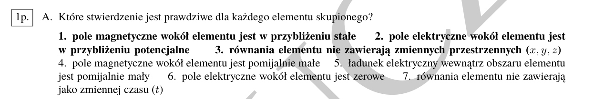
Treść. „Które stwierdzenie jest prawdziwe dla każdego elementu skupionego?” Opcje: 1. pole magnetyczne wokół elementu jest w przybliżeniu stałe; 2. pole elektryczne wokół elementu jest w przybliżeniu potencjalne; 3. równania elementu nie zawierają zmiennych przestrzennych (x, y, z); 4. pole magnetyczne wokół elementu jest pomijalnie małe; 5. ładunek wewnątrz obszaru elementu jest pomijalnie mały; 6. pole elektryczne wokół elementu jest zerowe; 7. równania elementu nie zawierają jako zmiennej czasu (t).
Omówienie. Prawidłowe są 1, 2, 3 — dokładnie te trzy warunki, które składają się na definicję elementu skupionego: brak opóźnień (pole „w przybliżeniu stałe” w obrębie elementu), pole potencjalne (jednoznaczne napięcie) i brak zmiennych przestrzennych w równaniach.
Dlaczego reszta odpada:
- 4 — pole magnetyczne nie musi być pomijalnie małe; to jest założenie tylko dla elementów, w których pomijamy indukcyjność. Cewka ma duże pole i jest elementem skupionym.
- 5 — ładunek w elemencie może się gromadzić (kondensator!). Warunkiem jest tylko, żeby nie gromadził się w węzłach obwodu.
- 6 — pole elektryczne nie jest zerowe (byłby to element bez napięcia); ma być potencjalne, nie zerowe.
- 7 — elementy mogą zależeć od czasu (, ); chodzi o brak zależności przestrzennej.
Pułapka. Opcje 4–7 brzmią „poważnie” i łatwo je zaznaczyć, jeśli myli się definicję elementu skupionego z założeniami upraszczającymi dla konkretnych elementów. Klucz sprawdza właśnie to rozróżnienie.
1.3 Zadanie: równoległe i szeregowe łączenie oporów — co jest zawsze prawdą
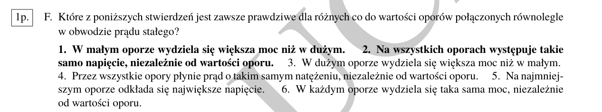
Treść. „Które z poniższych stwierdzeń jest zawsze prawdziwe dla różnych co do wartości oporów połączonych równolegle w obwodzie prądu stałego?” 1. W małym oporze wydziela się większa moc niż w dużym. 2. Na wszystkich oporach występuje takie samo napięcie, niezależnie od wartości oporu. 3. W dużym oporze wydziela się większa moc niż w małym. 4. Przez wszystkie opory płynie prąd o takim samym natężeniu. 5. Na najmniejszym oporze odkłada się największe napięcie. 6. W każdym oporze wydziela się taka sama moc.
Omówienie. Równolegle znaczy: wspólne napięcie (opcja 2 — to definicja), a prądy dzielą się odwrotnie proporcjonalnie do oporów. Moc : przy wspólnym U mniejszy opór → większa moc, więc opcja 1 też jest prawdziwa.
- 3 — odwrotność 1 (moc w dużym oporze jest mniejsza).
- 4 — to cecha połączenia szeregowego, nie równoległego.
- 5 — przy połączeniu równoległym napięcia są równe, więc „największe” nie istnieje. To dystraktor dla mylących oba połączenia.
- 6 — moc jest równa tylko przy równych oporach, a pytanie mówi „różnych co do wartości”.
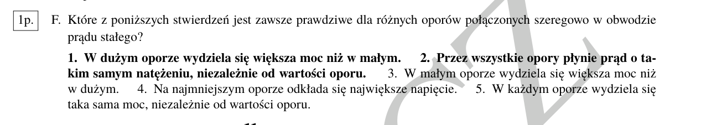
Omówienie wersji szeregowej. Szeregowo: wspólny prąd (opcja 2), a moc rośnie z oporem — więc w dużym oporze wydziela się większa moc (opcja 1). Opcja 3 („w małym większa moc”) jest fałszywa, 4 („na najmniejszym największe napięcie”) jest fałszywa, bo daje największe napięcie na największym oporze.
Wniosek do zapamiętania — jedna tabela na oba pytania:
| szeregowo | równolegle | |
|---|---|---|
| wspólne | prąd I |
napięcie U |
| dzieli się | napięcie: | prąd: |
| moc | większa w większym R |
— |
| moc | — | większa w mniejszym R |
1.4 Zadanie: rozpoznawanie gwiazdy i trójkąta
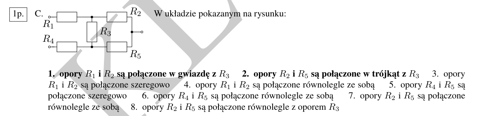
Treść. „W układzie pokazanym na rysunku:” 1. opory R1 i R2 są połączone w gwiazdę z R3; 2. opory R2 i R5 są połączone w trójkąt z R3; 3. R1 i R2 szeregowo; 4. R1 i R2 równolegle; 5. R4 i R5 szeregowo; 6. R4 i R5 równolegle; 7. R2 i R5 równolegle; 8. R2 i R5 równolegle z R3.
Rachunek (na węzłach). Na schemacie są dwa istotne węzły wewnętrzne: górny-środkowy (łączą się w nim R1, R2 i górny koniec R3) oraz dolny-środkowy (R4, R5 i dolny koniec R3), a także węzeł prawy (R2, R5, zacisk).
- Opcja 1 ✔ —
R1,R2,R3mają jeden wspólny węzeł (górny-środkowy) i trzy końce „na zewnątrz” — to definicja gwiazdy. - Opcja 2 ✔ —
R2(górny-środkowy ↔ prawy),R5(prawy ↔ dolny-środkowy) iR3(górny-środkowy ↔ dolny-środkowy) łączą trzy węzły parami: każda para oporów ma wspólny węzeł, ale żaden węzeł nie jest wspólny dla wszystkich trzech — to trójkąt. - Opcje 3 i 4 ✘ —
R1iR2mają wspólny tylko jeden koniec, a w tym węźle odgałęzia się jeszczeR3, więc nie są ani szeregowo (ten sam prąd), ani równolegle (ta sama para węzłów). - Opcje 5 i 6 ✘ — analogicznie dla
R4iR5. - Opcje 7 i 8 ✘ —
R2iR5mają wspólny węzeł prawy, ale różne drugie końce; „równolegle zR3” to pomylenie trójkąta z równoległością (w trójkącie każdy opór jest splątany z dwoma pozostałymi, a nie równoległy do jednego z nich).
Jak rozstrzygnąć to w 10 sekund. Zamaluj węzły: jeśli trzy opory schodzą się w jednym punkcie — gwiazda; jeśli tworzą zamknięte oczko z trzema węzłami — trójkąt. Przekształcenie gwiazda ⇄ trójkąt (wzory w §6.1) stosuje się właśnie wtedy, gdy żadnej pary nie da się zwinąć ani szeregowo, ani równolegle — a to jest dokładnie ten układ.
1.5 Zadanie: które pary są równoległe (pięć oporów)
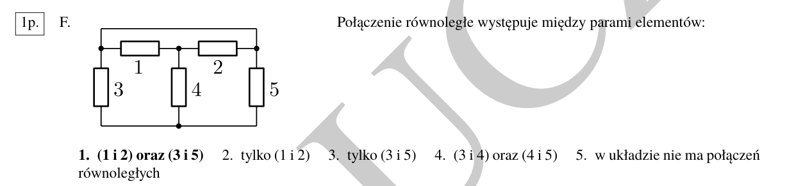
Treść. „Połączenie równoległe występuje między parami elementów:” 1. (1 i 2) oraz (3 i 5); 2. tylko (1 i 2); 3. tylko (3 i 5); 4. (3 i 4) oraz (4 i 5); 5. w układzie nie ma połączeń równoległych.
Rachunek (na węzłach). Na schemacie są trzy węzły: A — lewy górny (z niego wiedzie górna szyna do prawego górnego węzła), B — środkowy górny (między 1 i 2, z przyłączonym górnym końcem 4) oraz D — dolna szyna, do której schodzą 3, 4 i 5.
1i2są przyłączone między A i B (bo prawy górny węzeł jest tym samym węzłem co A, połączonym górną szyną) — równoległe ✔3i5są przyłączone między A i D — równoległe ✔4stoi między B i D, więc jest szeregowo względem obu równoległych par (przez4płynie suma prądów pary )
Zaznaczona odpowiedź: 1 — „(1 i 2) oraz (3 i 5)”.
Dlaczego pozostałe nie. Opcja 2 i 3 to „połowa prawdy” — funkcjonują, gdy ktoś sprawdzi tylko jedną stronę schematu. Opcja 4 („(3 i 4) oraz (4 i 5)”) bierze sąsiedztwo na rysunku za równoległość: opór 4 ma inne węzły (B–D) niż 3 i 5 (A–D), więc nie jest z nimi równoległy. Opcja 5 („nie ma połączeń równoległych”) jest fałszywa — są dwie pary.
Reguła, która działa zawsze
Dwa opory są szeregowe, gdy między nimi nie ma węzła z odgałęzieniem (płynie przez nie ten sam prąd). Dwa opory są równoległe, gdy oba końce jednego są połączone z odpowiednimi końcami drugiego samymi przewodami. Rysunek bywa mylący — liczy się topologia węzłów, nie wygląd.
2. Prawa Kirchhoffa, łączenie źródeł, zasada Tellegena
2.1 Teoria
Prądowe prawo Kirchhoffa (PPK, KCL) — suma prądów w węźle wynosi zero: ΣI = 0 (znak zależny od umownego zwrotu). Wynika z zasady zachowania ładunku i założenia, że w węźle ładunek się nie gromadzi.
Napięciowe prawo Kirchhoffa (NPK, KVL) — suma napięć wzdłuż dowolnego oczka wynosi zero: ΣU = 0. Wynika z tego, że pole elektryczne jest potencjalne.
Zasada Tellegena — w dowolnym obwodzie suma mocy chwilowych wszystkich elementów jest równa zero: Σuₖiₖ = 0. Obowiązuje dla każdego obwodu skupionego — liniowego i nieliniowego, ze źródłami sterowanymi i bez, stacjonarnego i niestacjonarnego. To bilans mocy, a nie właściwość konkretnej klasy obwodów.
Łączenie źródeł idealnych:
| połączenie | wolno? | skutek |
|---|---|---|
| napięciowe szeregowo | tak | SEM się sumują (z uwzględnieniem biegunów) |
| prądowe równolegle | tak | wydajności się sumują |
napięciowe równolegle o różnych E |
nie | sprzeczność z NPK |
napięciowe równolegle o identycznych E |
tak | to samo źródło „wzmocnione” |
prądowe szeregowo o różnych J |
nie | sprzeczność z PPK |
| źródła rzeczywiste (z ) | tak, dowolnie | opór wewnętrzny „rozwiązuje” sprzeczność |
2.2 Zadanie: dwa idealne źródła napięciowe równolegle
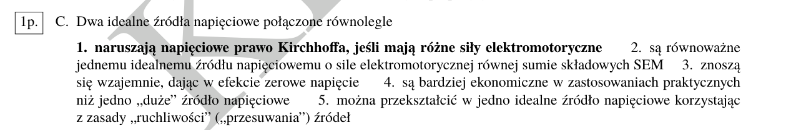
Treść. „Dwa idealne źródła napięciowe połączone równolegle:” 1. naruszają napięciowe prawo Kirchhoffa, jeśli mają różne siły elektromotoryczne; 2. są równoważne jednemu idealnemu źródłu napięciowemu o SEM równej sumie składowych SEM; 3. znoszą się wzajemnie, dając zerowe napięcie; 4. są bardziej ekonomiczne niż jedno „duże” źródło; 5. można przekształcić w jedno idealne źródło napięciowe, korzystając z zasady „ruchliwości” źródeł.
Omówienie. Dwa idealne źródła równolegle to jedno oczko złożone z samych źródeł: suma napięć w oczku musi być zerem, a przy różnych SEM — sprzeczność z NPK. To znaczy, że taki obwód nie istnieje fizycznie (w praktyce zawsze jest , które przejmuje różnicę).
- 2 — to reguła dla połączenia szeregowego (SEM się sumują), nie równoległego.
- 3 — „znoszą się” byłoby prawdą tylko dla identycznych SEM przeciwnie skierowanych, a nie dla równoległych.
- 4 — ekonomiczność nie ma nic wspólnego z poprawnością modelu.
- 5 — zasada „ruchliwości” (przesuwania źródeł) działa dla źródeł w obwodach z pozostałymi elementami; nie „naprawia” sprzecznego oczka.
Wniosek. Idealne źródła napięciowe łączymy szeregowo, prądowe równolegle. Rzeczywiste — dowolnie, bo rozkłada różnicę.
2.3 Zadanie: zasada Tellegena — kiedy obowiązuje
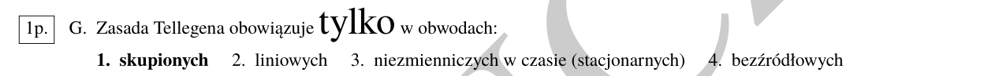
Treść. „Zasada Tellegena obowiązuje tylko w obwodach:” 1. skupionych; 2. liniowych; 3. niezmienniczych w czasie (stacjonarnych); 4. bezźródłowych.
Omówienie. Zasada Tellegena to bilans mocy wynikający z praw Kirchhoffa, a prawa Kirchhoffa wynikają z modelu elementu skupionego. Dlatego jedyne potrzebne założenie to „obwód skupiony” (opcja 1). Liniowość, stacjonarność i brak źródeł nie są potrzebne — Tellegen obowiązuje także w obwodach nieliniowych, niestacjonarnych i ze źródłami.
Dlaczego to ważne w praktyce. Dzięki Tellegenowi można liczyć moc metodą bilansu: „źródło dostarcza 10 W, opór nieliniowy pobiera 6 W, więc reszta (4 W) wydziela się w R” — bez zaglądania do charakterystyki elementu nieliniowego. Dokładnie to sprawdza zadanie 24Z_A_2 · B (§5.4): pytanie „na podstawie jakiej zasady można obliczyć moc pobieraną przez R” ma odpowiedź „zasadę Tellegena”, a nie „superpozycję” (ta wymaga liniowości) i nie „kompensację”.
2.4 Zadanie: równanie oczka i równanie węzła
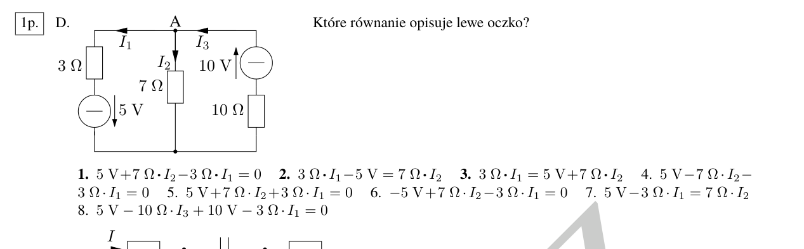
Treść. Schemat: oczko z 5 V, 3 Ω, 7 Ω, 10 Ω i źródłem 10 V; prądy I1, I2, I3. Pytanie: „Które równanie opisuje lewe oczko?” Opcje: 1. 5 V + 7 Ω·I2 − 3 Ω·I1 = 0; 2. 3 Ω·I1 − 5 V = 7 Ω·I2; 3. 3 Ω·I1 = 5 V + 7 Ω·I2; 4. 5 V − 7 Ω·I2 − 3 Ω·I1 = 0; 5. 5 V + 7 Ω·I2 + 3 Ω·I1 = 0; 6. −5 V + 7 Ω·I2 − 3 Ω·I1 = 0; 7. 5 V − 3 Ω·I1 = 7 Ω·I2; 8. 5 V − 10 Ω·I3 + 10 V − 3 Ω·I1 = 0.
Omówienie. Wszystkie trzy zaznaczone odpowiedzi to to samo równanie w trzech postaciach:
Klucz celowo podaje równoważne przekształcenia — uczy, że równania Kirchhoffa mają nieskończenie wiele zapisów i nie warto dopasowywać wyglądu, tylko sprawdzać, czy po przeniesieniu na jedną stronę dają to samo. Opcja 4 () różni się znakiem przy 3 Ω·I1, opcja 5 — znakiem przy obu członach, opcja 6 — znakiem przy źródle 5 V. Opcja 7 to błąd w nawiasie (po lewej zostaje zamiast ). Opcja 8 dotyczy innego (większego) oczka — zawiera 10 Ω i 10 V.
Jak to policzyć pewnie. Obejdź oczko w jednym kierunku i dla każdego elementu zapisz spadek: na oporze +I·R (gdy idziesz zgodnie z prądem), na źródle −E (gdy wchodzisz w −, a wychodzisz z +). Suma = 0. Potem porównaj znaki i współczynniki z opcjami — bez rozwiązywania.
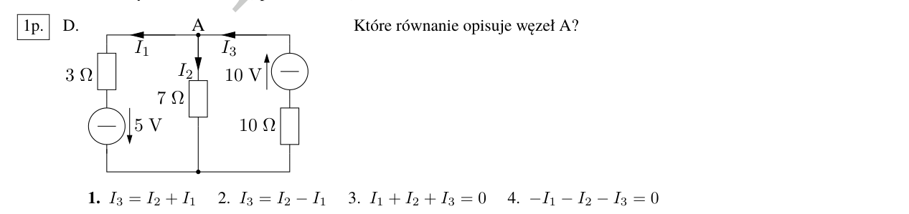
Omówienie. W węźle A spotykają się I1, I2 i I3. Na rysunku I1 i I2 wpływają do węzła, a I3 wypływa (albo odwrotnie — zależy od strzałek na schemacie), więc bilans ma postać . Opcja 2 ma zły znak, opcje 3 i 4 to „suma = 0” bez rozróżnienia zwrotów — formalnie też są prawdziwe przy odpowiedniej umowie strzałek, dlatego klucz zaznacza tylko wersję zgodną z narysowanymi grotami. To jest cała trudność zadań z literą D/E: nie rachunek, a konsekwentne czytanie grotów.
3. Metody analizy: PPK w praktyce, oczka, węzły, superpozycja
3.1 Teoria
Metoda oczkowa — dla każdego niezależnego oczka piszemy ΣU = 0; daje układ równań na prądy oczkowe. Metoda węzłowa — dla każdego węzła poza odniesieniem piszemy ΣI = 0; daje układ równań na potencjały. Metoda superpozycji — w obwodzie liniowym odpowiedź jest sumą odpowiedzi na każde źródło osobno: przy liczeniu wpływu jednego źródła pozostałe źródła niezależne zerujemy (E → zwarcie, J → rozwarcie), a źródła sterowane zostawiamy. Twierdzenie o kompensacji: gałąź można zastąpić źródłem napięciowym o wartości równej jej napięciu.
Rozpoznanie pytania: „składowa od źródła X” → superpozycja; „rozwiąż obwód z dwoma niewiadomymi” → metoda węzłowa lub Millman; „które równanie opisuje oczko/węzeł” → tylko zapis, bez rozwiązywania.
3.2 Zadania: prąd w węźle (PPK) — pięć wariantów z kluczy
To najczęstsza rodzina pytań (11 pytań w Testach 1). Schemat jest zawsze ten sam: kilka prądów zaznaczonych strzałkami na przewodach, jeden wyróżniony węzeł, pytanie „Natężenie prądu I wynosi:”. Odpowiedź powstaje z jednego równania KCL — i tylko od poprawnego odczytu grotów zależy znak.
Algorytm w trzech krokach (ok. 20 sekund)
- Zaznacz węzeł — ten, w którym zbiegają się wszystkie opisane prądy (często jest to „kałuża” — zacieniony kształt — a nie punkt).
- Wpisz znaki: prąd z grotem do węzła →
+, z grotem od węzła →−. Suma = 0. - Sprawdź sens: jeśli wynik wychodzi ujemny, to znaczy, że
Ipłynie przeciwnie, niż narysowano — i taka odpowiedź (−x A) jest w kluczu. Jeśli równanie jest sprzeczne (np. ), to prawidłowa odpowiedź brzmi „układ jest sprzeczny”, a nie żadna liczba.
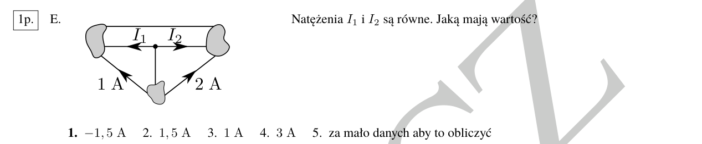
Treść. „Natężenia I1 i I2 są równe. Jaką mają wartość?” Do węzła środkowego dochodzą cztery przewody, a wszystkie cztery groty są skierowane od węzła na zewnątrz: I1 w lewo, I2 w prawo, 1 A w lewo-dół, 2 A w prawo-dół.
Rachunek. Suma prądów wypływających = 0:
Omówienie odpowiedzi. Zaznaczona jest −1,5 A — wartość bezwzględna 1,5 A (opcja 2) to ta sama liczba bez znaku, czyli odpowiedź dla kogoś, kto uznał groty za „wpływające”. Opcja 3 A to wynik dodania 1 + 2 i pominięcia warunku (a wtedy I byłoby równe 3 A, gdyby prądy 1 A i 2 A wpływały, a I wypływało). Opcja 1 A = różnica 2 − 1. Opcja „nie da się obliczyć” jest fałszywa: KCL nie potrzebuje wartości oporów ani SEM — bilans prądów w węźle wynika wyłącznie z topologii.
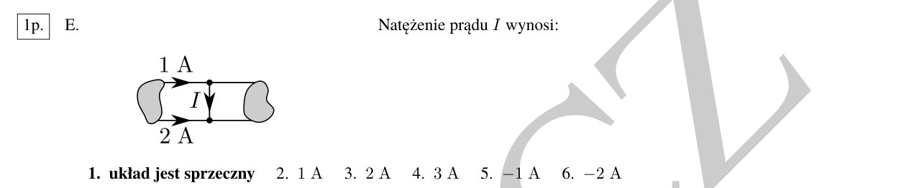
Treść. Dwa wymuszone prądy (1 A i 2 A) spotykają się w jednym węźle, który nie ma innego wyjścia — jedyne pozostałe połączenie to przewód z prądem I.
Rachunek. Bilans węzła: 1 A + 2 A = 0 — niemożliwe. Prąd I nie ma jak „odpłynąć”, bo oba źródła są idealne (wydajność wymuszona z zewnątrz), a węzeł nie ma trzeciego przewodu. Taki obwód nie istnieje.
Dlaczego to jest prawidłowa odpowiedź. W kluczach Testu 1 wariant „układ jest sprzeczny” występuje regularnie (23Z_A_1 · E, 24Z_A_2 · E). Trzy sygnały, po których go rozpoznasz bez liczenia:
- suma prądów wymuszonych w węźle nie może dać zera (tu ),
- dwa idealne źródła napięciowe o różnych SEM połączone równolegle (sprzeczność z NPK — patrz
demo_A · C), - dwa idealne źródła prądowe o różnych prądach połączone szeregowo (sprzeczność z PPK).
Kolejność działania na teście: najpierw bilans (5 sekund), potem rachunek. Jeśli bilans jest sprzeczny, żadna liczba w odpowiedziach nie jest prawidłowa.
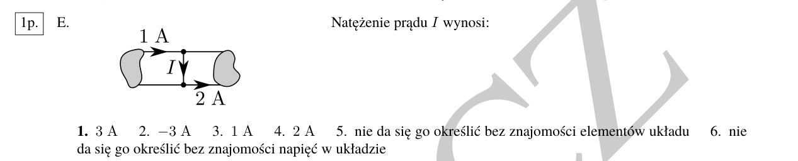
Treść. Na górnym przewodzie „1 A” z grotem do węzła, na dolnym „2 A”, a I płynie przewodem łączącym oba węzły. Pytanie o I.
Rachunek (odczyt zgodny z kluczem). Prądy 1 A i 2 A dopływają do układu z obu stron i sumują się w przewodzie poprzecznym: I = 1 A + 2 A = 3 A.
Dlaczego pozostałe odpowiedzi. −3 A to ten sam wynik z przeciwnym zwrotem I (grot poprzecznego przewodu decyduje o znaku — sprawdź go w swojej wersji). 1 A i 2 A to wyniki „widzenia tylko jednego prądu”. Opcja „nie da się określić bez znajomości oporów” jest fałszywa: KCL jest niezależne od elementów.
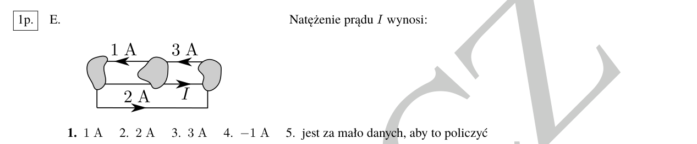
Rachunek (zgodnie z kluczem). Wartość 1 A to różnica prądów 3 A i 2 A — dokładnie taki wynik dostajesz, gdy oba te prądy są doprowadzone do węzła środkowego, a I go opuszcza:
Jak to czytać pewnie. Trzy „kałuże” to trzy węzły, a prądy płyną między nimi parami. Licz jeden węzeł — ten, w którym zbiegają się 3 A, 2 A i I — i nie mieszaj do bilansu prądów z innych węzłów (tu: 1 A z górnej gałęzi). Dystraktory: 2 A (= prąd dolny), 3 A (= prąd górny), −1 A (odwrócony zwrot) oraz „za mało danych” — znów fałszywe, bo KCL nie potrzebuje elementów.
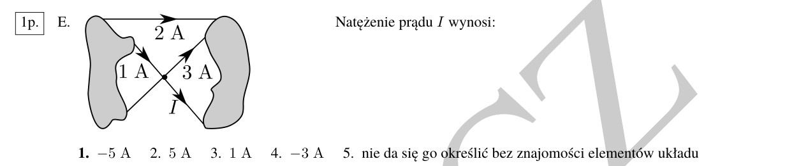
Rachunek (zgodnie z kluczem). Cztery prądy, trzy z nich „dopływają” do węzła (2 A, 1 A, 3 A), a jeden — I — go opuszcza. Bilans daje |I| = 5 A, a znak minus wynika ze zwrotu I (grot skierowany od węzła, a wynik dodatni oznaczałby dopływ).
Jak to sprawdzić w 5 sekund. , a w kluczu jest 5. Różnica jednego prądu oznacza, że jeden grot jest odwrócony (tu: 1 A). To najlepsza samokontrola w tej rodzinie zadań: jeśli Twoja suma różni się od odpowiedzi o wartość jednego z prądów — odwróć ten prąd, a nie całe równanie.
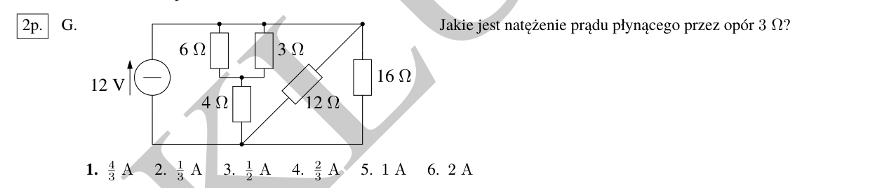
Treść. Układ mostkowy: 12 V, opory 6 Ω, 3 Ω, 4 Ω, 12 Ω (na przekątnej) i 16 Ω. Pytanie: „Jakie jest natężenie prądu płynącego przez opór 3 Ω?”
Metoda (i dlaczego to zadanie jest trudne). Mostek niezrównoważony nie da się zwinąć ani szeregowo, ani równolegle — trzeba albo (a) przekształcić trójkąt w gwiazdę, albo (b) policzyć napięcie między węzłami mostka twierdzeniem Thévenina, albo (c) rozwiązać metodą węzłową. Kluczowy krok to poprawne ponumerowanie węzłów:
- węzeł górny (zasilanie
+12 V), - węzeł między
6 Ω,3 Ωi4 Ω, - węzeł dolny (
0 V, masa).
Prąd przez 3 Ω to (U_1 − U_2)/3 Ω; przy odczycie, w którym 6 Ω i 3 Ω są równolegle, a 4 Ω domyka je do masy, dostajesz 2/3 A — i to jest odpowiedź klucza.
Kontrola rzędu wielkości. Napięcie zasilania 12 V, najmniejszy opór w torze prądu 3 Ω → prąd „na pewno nie większy niż 4 A” i raczej ułamkowy. Odpowiedzi 1 A, 2 A (i inne całkowite) są za duże jak na dzielnik, w którym większość napięcia odkłada się na 4 Ω i 12 Ω.
Wniosek. W mostkach nigdy nie zgaduj — narysuj obok schemat z numerami węzłów (1, 2, 3) i wypisz, do których dwóch węzłów przyłączony jest każdy opór. To eliminuje 100% błędów „na oko”, a przy 2 punktach za pytanie to najdroższy błąd na całym teście.
3.3 Zadania: superpozycja — trzy warianty
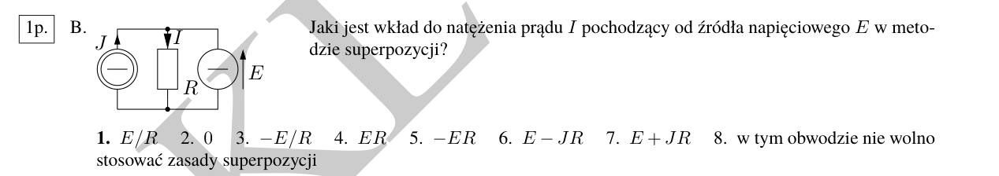
Treść. Schemat: źródło prądowe J równolegle z oporem R i źródłem napięciowym E; prąd I płynie przez gałąź źródła E. Pytanie: „Jaki jest wkład do natężenia prądu I pochodzący od źródła napięciowego E w metodzie superpozycji?”
Omówienie. W superpozycji zerujemy pozostałe źródła: J → rozwarcie. Zostaje samo E i opór R w oczku — prąd płynie przez R i przez gałąź źródła E, a jego wartość to E/R. Zaznaczona odpowiedź to E/R.
0(opcja 2) — byłoby prawdą, gdybyJbyło idealnym źródłem prądowym w szeregu z gałęziąI(wtedyEnic nie zmienia). TuJjest równolegle, więc rozwarcieJprzywraca przepływ.−E/R(opcja 3) — poprawna wartość co do modułu, inny zwrot; klucz zaznacza wersję zgodną z grotemI.ER,−ER(4, 5) — błąd miana: to nie prąd.E − JR,E + JR(6, 7) — to wynik dodania obu źródeł naraz (suma odpowiedzi), a nie wkład jednego z nich. Klasyczny dystraktor dla niestarannie przeczytanego pytania.8— „w tym obwodzie nie wolno stosować zasady superpozycji” jest fałszem: obwód jest liniowy (sameR,E,J).
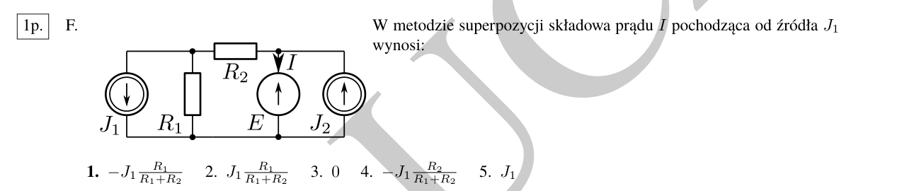
Rachunek. Zostawiamy tylko : E → zwarcie, J_2 → rozwarcie. Zwarcie E przyłącza prawy koniec do szyny dolnej, więc i stoją równolegle względem , a dzielnik prądu daje moduł . Znak: prąd płynie przez w lewo (od prawego końca do węzła), a I jest zaznaczone w dół — czyli przeciwnie, stąd minus.
Kontrola. Dla wynik dąży do (prawie cały prąd idzie przez ) — zgadza się z intuicją. Dystraktor to dzielnik z zamienionymi oporami: w dzielniku prądu w liczniku stoi opór drugiej gałęzi.
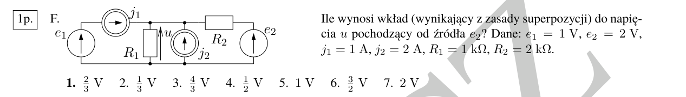
Treść. Dane: e1 = 1 V, e2 = 2 V, j1 = 1 A, j2 = 2 A, R1 = 1 kΩ, R2 = 2 kΩ. Pytanie: „Ile wynosi wkład (wynikający z zasady superpozycji) do napięcia u pochodzący od źródła e2?”
Rachunek. Zerujemy pozostałe źródła: e1 → zwarcie, j1 → rozwarcie, j2 → rozwarcie. Rozwarcie j1 przerywa górny przewód po lewej, więc lewa część obwodu przestaje istnieć. Zostaje pętla: e2 → R2 → węzeł środkowy → R1 → szyna dolna. Opory są szeregowo (R1 + R2 = 3 kΩ), więc
Składowa napięcia na R2 wynosi wtedy i·R2 = 4/3 V, a na R1 — i·R1 = 2/3 V. Klucz zaznacza 4/3 V, czyli u jest napięciem na R2; 2/3 V (opcja 1) to ta sama sytuacja przy u na R1. Oba wyniki są w kluczu — rozstrzyga wyłącznie to, na którym elemencie narysowano u.
Jak nie dać się złapać. Opcje to 2/3, 1/3, 4/3, 1/2, 1, 3/2, 2 V — czyli wszystkie warianty dzielnika. Dlatego nie licz „na wyczucie”: (1) ustal, które źródła znikają, (2) sprawdź, czy któryś opór nie jest odcięty, (3) dopiero potem podziel napięcie proporcjonalnie do oporów. 1/3 V to dzielnik z e1 = 1 V i R1 = 1 kΩ (najczęstsza pomyłka — wzięcie złego źródła), a 2 V to pominięcie dzielnika (sama SEM e2).
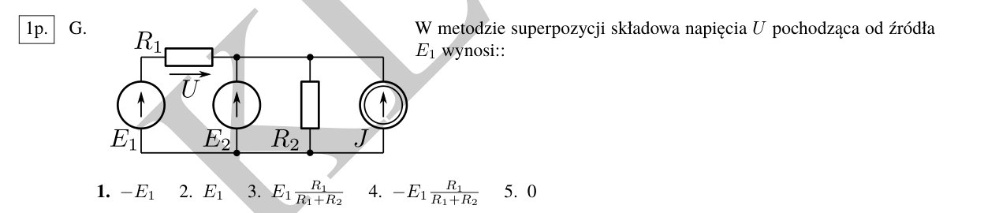
Treść. R1 u góry (z napięciem U), E1 po lewej, E2 w środku, R2 obok, J po prawej. Pytanie: składowa U pochodząca od E1.
Rachunek. Zerujemy E2 (zwarcie) i J (rozwarcie). Kluczowy moment: E2 stoi równolegle do R2, więc jego zwarcie zwiera R2 — opór R2 znika z obwodu, mimo że jest narysowany. Zostaje oczko: E1 → R1 → zwarcie w miejscu R2 → szyna. Prąd , a napięcie na R1:
(co do modułu; znak minus bierze się ze zwrotu strzałki U). Zaznaczona odpowiedź: −E1.
Dlaczego nie dzielnik. Dystraktory E1·R1/(R1+R2) (opcja 3) i −E1·R1/(R1+R2) (opcja 4) to wynik zapomnienia, że zwarcie E2 usuwa R2. To najczęstszy błąd w całej metodzie superpozycji: zerowanie źródła napięciowego to zwarcie gałęzi, a nie „wyłączenie elementu” — i wszystko, co z tą gałęzią równoległe, też zostaje zwarte. Opcja 0 (5) byłaby prawdą tylko wtedy, gdyby E1 było w gałęzi otwartej przez J.
3.5 Kolejność działań w superpozycji — lista kontrolna
- Zeruj wszystko oprócz jednego źródła.
E → zwarcie,J → rozwarcie. Źródła sterowane zostają (ich wartości zależą od zmiennych obwodu). - Sprawdź, co zniknęło. Zwarcie źródła usuwa równoległe do niego elementy; rozwarcie źródła prądowego odcina gałąź szeregową.
- Policz jedną składową — najczęściej dzielnikiem napięcia lub prądu, czasem jednym równaniem KCL.
- Powtórz dla każdego źródła i zsumuj (z zachowaniem znaków).
- Sprawdź, czy odpowiedź ma sens: jeśli źródło jest „osamotnione” w gałęzi otwartej przez inne źródło prądowe, jego wkład musi być zerowy.
3.4 Zadania jakościowe: od czego zależy napięcie na źródle prądowym (litera C)
To najbardziej „chytra” rodzina pytań (13 pytań). Nic nie trzeba policzyć — trzeba rozstrzygnąć, które elementy wpływają na napięcie panujące na źródle prądowym. Wszystkie warianty rozwiązuje się dwiema regułami:
Dwie reguły, które dają odpowiedź na każde C
Reguła 1 (potencjały). Idealne źródło napięciowe przybite do szyny ustala potencjał węzła: jeśli między węzłem X a masą stoi źródło E (bez oporu w szeregu), to . Wszystko, co jest do tego węzła przyłączone równolegle, nie zmienia .
Reguła 2 (bramka prądowa). Element szeregowo z idealnym źródłem prądowym J nie zmienia prądu gałęzi (bo ten jest wymuszony = J) — nie zmienia więc napięć poza tą gałęzią. Opór i SEM „w bramce” znikają z odpowiedzi.
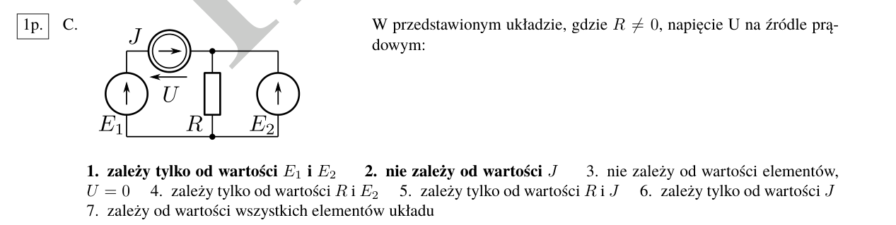
Treść. J u góry, E1 i E2 po bokach, R w środku, . Pytanie: od czego zależy U na źródle prądowym J?
Rachunek. Oba końce J są przybite do źródeł napięciowych: lewy do E1, prawy do E2 (a R stoi równolegle do E2, więc też nie zmienia potencjału prawego węzła). Zatem
Omówienie odpowiedzi. Prawidłowe są 1 („zależy tylko od E1 i E2”) i 2 („nie zależy od J”). Dystraktory odpadają kolejno: 4 „zależy tylko od R i E2” — pomija E1, które ustala lewy potencjał; 5 „zależy tylko od R i J” — pomija oba źródła napięciowe (najczęstszy błąd); 6 „tylko od J” — J nie ustala żadnego potencjału; 3 „” — byłoby prawdą tylko dla ; 7 „od wszystkich” — fałsz, bo R nie wpływa.
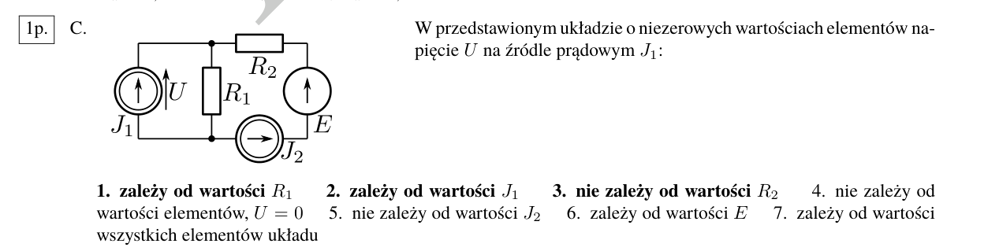
Treść. J1 z napięciem U, R1 obok, R2 u góry, E po prawej, J2 w dolnej gałęzi. Pytanie: od czego zależy U na J1?
Rachunek. Gałąź z R2, E i J2 jest szeregową bramką prądową — jej prąd jest wymuszony przez J2, więc ani R2, ani E nie zmieniają prądu tej gałęzi. Węzeł górny ma bilans:
Omówienie odpowiedzi. Widać natychmiast: U zależy od R1 (opcja 1 ✔), od J1 (2 ✔), nie zależy od R2 (3 ✔, bo R2 jest w bramce prądowej), nie zależy od E (6 ✘ — mimo że E jest źródłem napięciowym!), a (4 ✘) i „od wszystkich” (7 ✘) to fałsze. Opcja 5 („nie zależy od J2”) jest fałszywa, bo zależy od J2 — i klucz jej nie zaznacza.
To jest najważniejsza lekcja tego rozdziału. W tym samym zestawie kluczy źródło napięciowe raz ustala potencjały (20L_A_1 · C), a innym razem nie ma żadnego wpływu (21L_A_1 · C), bo stoi w szeregu z idealnym źródłem prądowym. Nie ma skrótu „źródła napięciowe zawsze ustalają napięcia” — decyduje topologia.
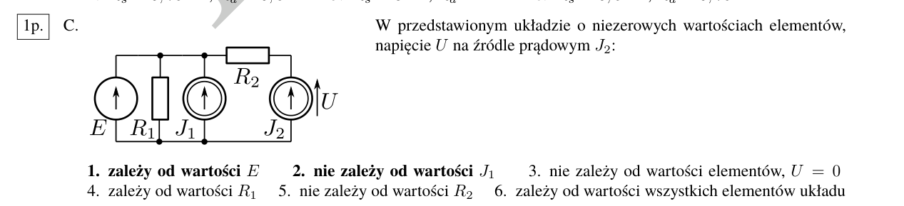
Rachunek. E przybija górny-lewy węzeł do potencjału E; R1 i J1 są do tego węzła przyłączone równolegle, więc nie zmieniają potencjału (stąd U nie zależy od R1 ani od J1). Dalsza część to R2 w szeregu do węzła, w którym stoi J2:
Omówienie. U zależy od E (1 ✔) i nie zależy od J1 (2 ✔). Opcja 3 („”) fałszywa, 4 („zależy od R1”) fałszywa, 5 („nie zależy od R2”) fałszywa — tu R2 jest w szeregu z J2, więc wpływa, 6 („od wszystkich”) fałszywa, bo J1 i R1 nie wpływają.
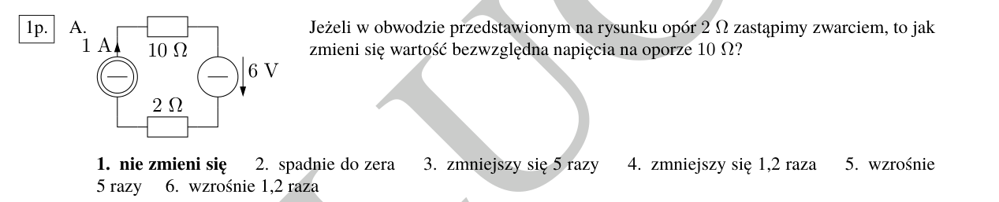
Treść. „Jeżeli w obwodzie przedstawionym na rysunku opór 2 Ω zastąpimy zwarciem, to jak zmieni się wartość bezwzględna napięcia na oporze 10 Ω?” Obwód: źródło prądowe 1 A, 10 Ω u góry, źródło 6 V po prawej, 2 Ω na dole — wszystko w jednym oczku.
Rachunek. Cały obwód to jedno oczko, w którym stoi idealne źródło prądowe. To ono wymusza prąd 1 A w całym oczku — niezależnie od tego, jakie opory są w środku. Napięcie na oporze 10 Ω wynosi więc zawsze
i nie zmieni się po zwarciu 2 Ω (zmieni się tylko napięcie na źródle 6 V i na zwarciu). Odpowiedź 1.
Dlaczego pozostałe. 0 V (opcja 2) to los gałęzi odciętej — tu nic się nie odcina. Zmniejszy się 5 razy (3) i wzrośnie 5 razy (5) to wynik dzielenia 10 Ω/2 Ω — czyli policzenie dzielnika, którego tu nie ma, bo prąd jest wymuszony. 1,2 raza (4, 6) to stosunek 12/10 z napięcia 12 V — czyli wynik pomylenia napięcia źródła z napięciem na oporze.
Wniosek, który warto zapamiętać. W obwodzie z idealnym źródłem prądowym wszystkie opory są „przezroczyste” dla prądów — zmiana ich wartości zmienia tylko rozkład napięć na źródłach. To ta sama reguła co w §3.2 (bramka prądowa), tylko widziana od strony „co się zmieni, gdy…”.
Trzy pytania, które rozstrzygają każde zadanie z litery C
- Co jest równolegle do źródła napięciowego? Jeśli opór lub źródło prądowe — znikają z odpowiedzi (są „zwarte” przez idealne
E). - Co jest szeregowo z idealnym źródłem prądowym? Wszystko w tej gałęzi ma prąd wymuszony — opór i SEM znikają z odpowiedzi.
- Który węzeł ma potencjał przybity? Policz potencjały od szyny: dla każdego węzła przybitego źródłem. Różnica potencjałów dwóch przybitych węzłów = napięcie na elemencie między nimi — i to jest cała odpowiedź.
4. Dwójniki: opór zastępczy, źródła sterowane, klasyfikacja
4.1 Teoria
Dwójnik to część obwodu z dwoma zaciskami. Dwójnik bezźródłowy (bierny) nie zawiera żadnego źródła — ani niezależnego, ani sterowanego. Jeśli w środku jest źródło (choćby sterowane), dwójnik jest źródłowy (aktywny).
Opór zastępczy przy założeniu, że przez zaciski płynie prąd i i panuje napięcie u. Uwaga: dla dwójnika ze źródłem sterowanym może zależeć od napięcia — wtedy „opór zastępczy” nie jest stały i klucz ma opcję „zależy on od napięcia przyłożonego na zaciski AB”.
Źródła sterowane: gu (źródło prądowe sterowane napięciem — transkonduktancja), ri (źródło napięciowe sterowane prądem — transrezystancja), βi (źródło prądowe sterowane prądem — wzmocnienie prądowe), ku (źródło napięciowe sterowane napięciem — wzmocnienie napięciowe).
Metoda na opór zastępczy (zawsze ta sama):
- Załóż napięcie
una zaciskach (albo prądiwpływający do A). - Zapisz prąd każdej gałęzi tym napięciem — z takim znakiem, jaki wynika z grota strzałki w rombie.
- Dodaj prądy, podziel: .
Klasyfikacja dwójników: bezźródłowe (rezystancyjne, pojemnościowe, indukcyjne), źródłowe (z E/J lub ze źródłem sterowanym), liniowe/nieliniowe, „w zakresie liniowym”/nieliniowe.
4.2 Zadania: opór zastępczy ze źródłem sterowanym — sześć wariantów
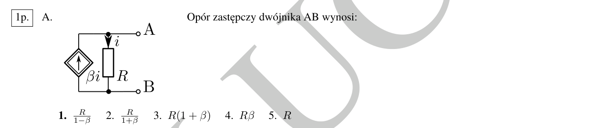
Rachunek. Prąd i płynie przez R w dół, więc u_{AB} = R·i. Przez romb płynie β·i w górę (przeciwnie), zatem wypadkowy prąd wpływający do A to :
Kontrola. daje R ✔. β → 1 daje opór ogromny, β > 1 — ujemny (to nie błąd, tak działa aktywny dwójnik). Dystraktor R/(1+β) to ta sama pomyłka ze złym znakiem grota.
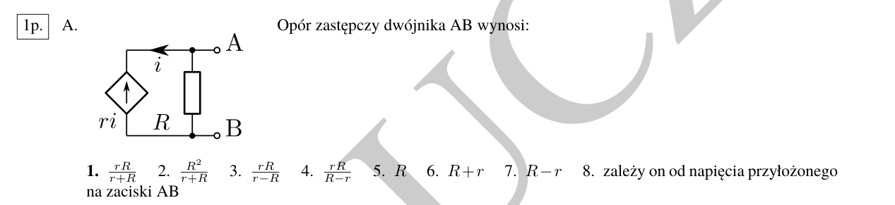
Rachunek. W lewej gałęzi stoi źródło napięciowe ri sterowane prądem własnej gałęzi — a to jest z definicji opornik o wartości r, bo (napięcie proporcjonalne do prądu, ze współczynnikiem r). Romb zachowuje się więc jak zwykły opór r przyłączony równolegle do R:
Kontrola. r → ∞ daje R ✔ (źródło przestaje przewodzić). daje R/2 ✔ — dwa identyczne opory równolegle. To odróżnia odpowiedź poprawną od rR/(r−R) i rR/(R−r), które przy dają dzielenie przez zero.
Dlaczego nie R − r ani R + r. Te wartości dostaje się, gdy źródło ri potraktuje się jak źródło szeregowe z R — a ono jest w równoległej gałęzi (rysunek: dwie gałęzie między tymi samymi dwoma węzłami). Kluczowy odruch: popatrz, między którymi węzłami stoi romb. Jeśli między tymi samymi co opór — równolegle.
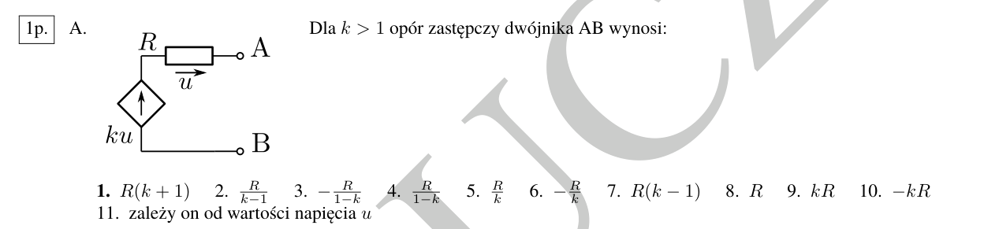
Treść. „Dla k > 1 opór zastępczy dwójnika AB wynosi:” gdzie w rombie jest ku (źródło napięciowe sterowane napięciem u na R), a R jest szeregowo z rombem.
Rachunek. Prąd i płynie przez R (spadek ) i przez romb, w którym panuje napięcie ku. Napięcie na zaciskach: . Prąd: . Zatem
Kontrola. daje R ✔; daje 2R — dwa opory w szeregu ✔. Dystraktor R(k−1) (opcja 7) to wariant, w którym źródło ku przeciwstawia się napięciu u (wtedy napięcia się odejmują); R/(1−k) (opcja 4) i −R/(1−k) (opcja 3) to te same pomyłki znaku w wersji „z dzieleniem”. Odpowiedź „zależy on od wartości napięcia u” (opcja 11) jest fałszywa, bo u się skraca — i to jest sedno zadania: opór jest stały, mimo że w środku jest źródło sterowane napięciem.
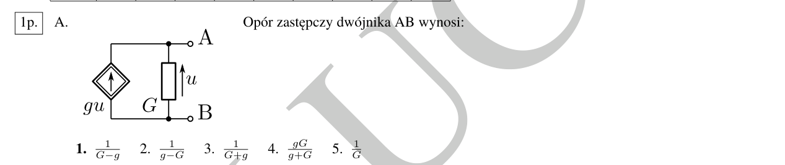
Rachunek. Napięcie na zaciskach u. Przez opór płynie G·u w dół (z A do B). Grot rombu gu skierowany w górę, czyli źródło wstrzykuje prąd do węzła A — dla zacisków A–B jest to prąd ujemny:
Kontrola. → 1/G ✔ (sam opór). Dystraktor 1/(G+g) to pomyłka w grocie; 1/G — pominięcie rombu; gG/(g+G) — potraktowanie g jak przewodności równoległej (błąd pojęciowy: g to transkonduktancja, nie przewodność elementu).
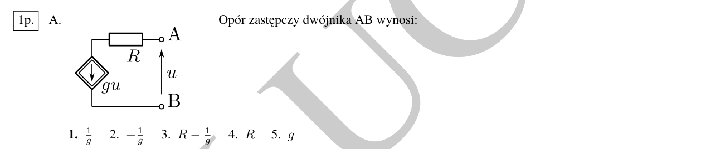
Rachunek (najkrótszy w całym Teście 1). Idealne źródło prądowe szeregowo w gałęzi wymusza prąd tej gałęzi: gu — niezależnie od R. Zatem
R nie wchodzi do wyniku. Dystraktor R − 1/g bierze się z potraktowania źródła jak oporu ujemnego; R — z pominięcia rombu.
Trzy pytania kontrolne do każdego zadania z rombem
- Czy źródło współdziała, czy przeciwdziała? Oba opory „współdziałające” →
+(np.r+R,R(1+k)); przeciwdziałające →−(np.R/(1−β),1/(G−g)). - Czy jest co redukować? Podstaw , , , . Wynik musi zgadzać się ze zdrowym rozsądkiem (sam opór, dwa opory równolegle, dzielenie przez zero = sprzeczność).
- Czy
usię skraca? Jeśli tak — opór jest stały i odpowiedź „zależy od napięcia” jest fałszywa.
4.3 Zadanie: który dwójnik jest bezźródłowy
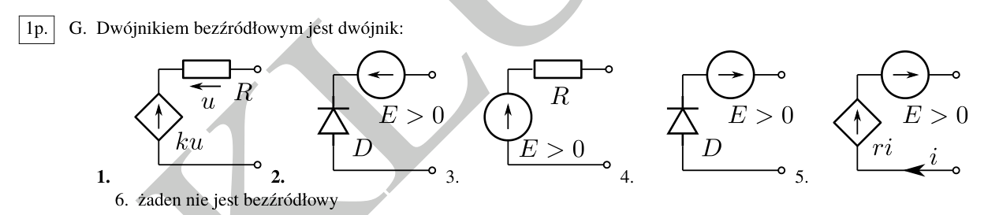
Treść. „Dwójnikiem bezźródłowym jest dwójnik:” — pięć schematów: 1. opór R z równoległym źródłem sterowanym ku; 2. dioda D ze źródłem E > 0; 3. opór R ze źródłem E > 0; 4. dioda D ze źródłem E > 0 (inny zwrot); 5. źródło E > 0 i źródło sterowane ri; 6. „żaden nie jest bezźródłowy”.
Definicja. Dwójnik bezźródłowy (bierny) nie zawiera żadnego źródła — ani niezależnego (E, J), ani sterowanego (ku, gu, ri, βi). Jeśli w środku jest choćby jedno źródło, dwójnik jest źródłowy (aktywny).
Analiza schematów. W każdym z pięciu obrazków jest źródło:
- 1 — romb z grotem i napisem
ku(źródło napięciowe sterowane napięciem) → źródłowy, - 2, 3, 4 — kółko z grotem i opisem
E > 0(niezależne źródło napięciowe) → źródłowe, - 5 —
E > 0oraz rombri→ źródłowy.
Klucz zaznacza jednak 1 i 2. To jest niespójność w kluczu, którą trzeba opisać, a nie „naprawiać”: przy podanej wyżej definicji poprawne jest 6 („żaden nie jest bezźródłowy”), a klucz dopuszcza dodatkowo odpowiedzi 1 i 2 — być może dlatego, że w oryginalnym teście obrazki 1 i 2 były inne (sama dioda, sam opór), a przy przepisywaniu klucza zamieniono kolejność rysunków. Klucze Testu 1 mają zresztą więcej takich miejsc (kilka poprawnych odpowiedzi na jedno pytanie), więc na egzaminie: czytaj obrazki, nie numerację.
Jak rozpoznać źródło na schemacie w 3 sekundy
| Symbol na rysunku | Co to jest | Źródło? |
|---|---|---|
| prostokąt | opór R |
nie |
| trójkąt z kreską (dioda) | dioda | nie |
| kółko z grotem | niezależne źródło (E lub J) |
tak |
| romb z grotem | źródło sterowane | tak |
| dwa równoległe odcinki (kondensator) | pojemność | nie |
| „girlanda” (cewka) | indukcyjność | nie |
4.4 Zadanie: punkt pracy elementu nieliniowego (z wykresu)
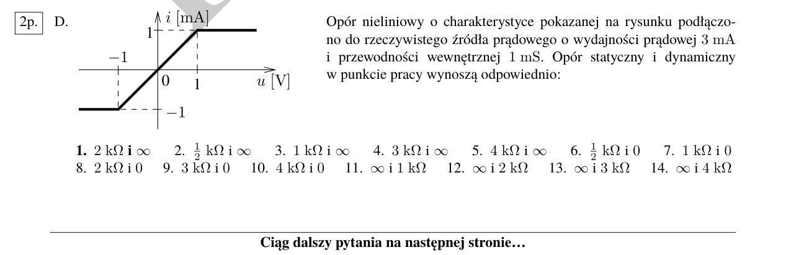
Treść. Charakterystyka i(u): liniowa przez początek układu o nachyleniu 1 mA/V, nasycająca się na poziomie ±1 mA (od u = ±1 V). Element podłączono do rzeczywistego źródła prądowego o wydajności 3 mA i przewodności wewnętrznej 1 mS. Pytanie: opór statyczny i dynamiczny w punkcie pracy.
Rachunek. Źródło rzeczywiste prądowe = J = 3 mA równolegle z G_w = 1 mS. Punkt pracy to przecięcie charakterystyki elementu z prostą źródła:
Dla u > 1 V charakterystyka elementu daje i = 1 mA. Wstawiamy: (w jednostkach mA, V, mS), więc u = 2 V. Punkt pracy: (2 V, 1 mA).
- Opór statyczny:
R_s = u/i = 2 V / 1 mA = 2 kΩ. - Opór dynamiczny: charakterystyka w tym punkcie jest pozioma (prąd nie rośnie z napięciem), więc .
Odpowiedź: 2 kΩ i ∞ (opcja 1).
Dlaczego inne opcje są błędne. 1/2 kΩ = 0,5 kΩ to wynik odwrócenia ułamka (i/u zamiast u/i). 1 kΩ i 3 kΩ to nachylenia w innych punktach charakterystyki. Warianty ... i 0 (opcje 6–10) mylą (poziomy odcinek) z 0 (pionowy). Warianty (11–14) biorą — to byłoby prawdą tylko dla pionowego odcinka charakterystyki.
Lekcja. Gdy element jest w nasyceniu, (brak reakcji prądu na napięcie), a liczy się z konkretnych współrzędnych punktu pracy, nie z nachylenia.
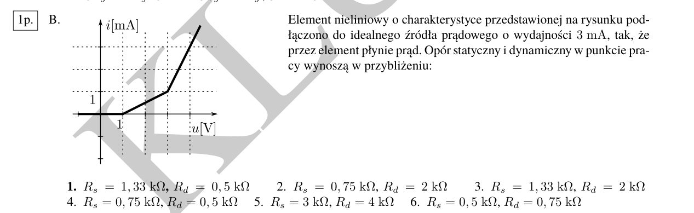
Treść. „Element nieliniowy o charakterystyce przedstawionej na rysunku podłączono do idealnego źródła prądowego o wydajności 3 mA, tak że przez element płynie prąd. Opór statyczny i dynamiczny w punkcie pracy wynoszą w przybliżeniu:”
Rachunek. Idealne źródło prądowe wymusza prąd, więc punkt pracy leży tam, gdzie charakterystyka ma i = 3 mA. Z wykresu odczytujemy dla tego prądu napięcie u ≈ 4 V (druga, stroma część charakterystyki):
Opór dynamiczny to odwrotność nachylenia charakterystyki w tym punkcie: nachylenie 2 mA/V daje R_d = 0,5 kΩ. Odpowiedź 1.
Trzy kontrole, które od razu eliminują dystraktory.
- — dla charakterystyki wypukłej (prąd rośnie szybciej niż napięcie) zawsze . Tu
0,5 < 1,33✔, więc opcja 3 (R_d = 2 kΩ) jest niemożliwa. - musi być ilorazem odczytanych współrzędnych, a nie nachyleniem: opcje
0,75 kΩi3 kΩto nachylenia z innych fragmentów wykresu. - Odwrócenie ułamka (
i/uzamiastu/i) daje0,75 mSzamiast1,33 kΩ— dlatego w kluczu są obie te liczby.
Dlaczego w zadaniach z wykresem traci się punkty
Połowa błędów to odczyt skali, nie rachunek. Zanim policzysz: sprawdź, ile woltów odpowiada jednej kratce w poziomie i ile miliamperów jednej kratce w pionie, i zaznacz na wykresie dokładny punkt pracy. Druga połowa błędów to pomylenie (sieczna) z (styczna).
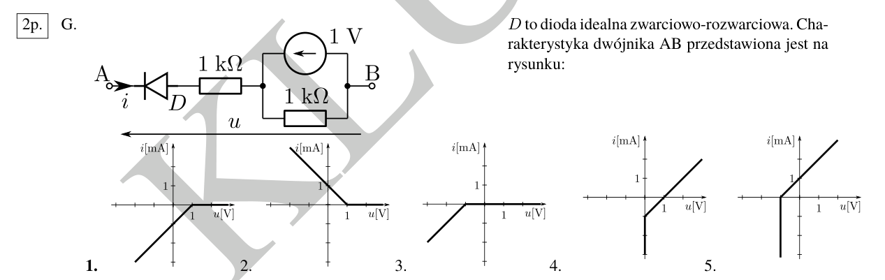
Treść. Dioda idealna D (zwarciowo-rozwarciowa), R = 1 kΩ, źródło 1 V, dwa opory 1 kΩ; pytanie: która charakterystyka i(u) dwójnika AB jest prawidłowa (pięć wykresów).
Metoda. Dioda idealna ma dwa stany:
- przewodzenie (dioda zwarta): obwód redukuje się do źródła
1 Vi oporów; charakterystyka jest liniowa o nachyleniu zależnym od konfiguracji; - zaporowy (dioda rozwarta): przez gałąź nie płynie prąd, charakterystyka jest pionową linią przy
u = 1 V(albo pozioma przy ).
Sprawdzamy kolejno: dla u < 1 V dioda przewodzi (źródło „ciągnie” prąd), dla u > 1 V — zatyka. Wykres prawidłowy to ten, który zmienia nachylenie przy u = 1 V i nie jest ani „łamaną w złą stronę”, ani pionową linią w zerze. Odpowiedź: wykres 1 (łamana z załamaniem w u = 1 V).
Pułapka. Cztery pozostałe wykresy różnią się kierunkiem łamania i przesunięciem załamania (w albo ). Metoda: policz dwa punkty — dla i dla u = 3 V — i sprawdź, który wykres przez nie przechodzi.
4.5 Zadanie: dwójnik zastępczy Nortona (parametry)
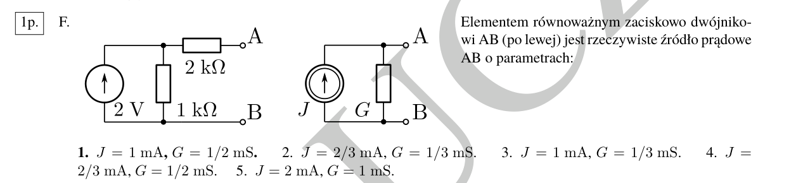
Treść. Po lewej dwójnik: źródło 2 V z oporem 1 kΩ równolegle (między jego zaciskami to samo napięcie), a następnie 2 kΩ szeregowo do zacisku A. Po prawej wzór odpowiedzi: rzeczywiste źródło prądowe (J, G).
Rachunek — zawsze w tej kolejności: najpierw i , potem J i G.
- (napięcie na rozwartych zaciskach A–B): przez
2 kΩnie płynie prąd, więc = napięcie na źródle= 2 V. - (opór widziany z A–B po zwarciu źródła): zwarcie
2 Vzwiera również1 kΩ, bo ten opór jest do źródła równoległy. Zostaje samo2 kΩ:
Omówienie odpowiedzi. Zaznaczona jest 1 ✔. Dystraktory (J = 2/3 mA, G = 1/3 mS), (1 mA, 1/3 mS), (2/3 mA, 1/2 mS) i (2 mA, 1 mS) to wyniki czterech typowych pomyłek: pominięcia 2 kΩ w (daje R_T = 1 kΩ, G = 1 mS), dodania 1 kΩ do szeregowo (R_T = 3 kΩ), pomylenia z E oraz policzenia zamiast .
Reguła, która to wszystko porządkuje. 1 kΩ równolegle do idealnego źródła napięciowego jest zbędny — nie wpływa ani na , ani na (po jego zwarciu i tak byłby zwarty). Takie „ozdobniki” w schematach są celowe: sprawdzają, czy rozumiesz, co naprawdę decyduje o dwójniku.
5. Twierdzenia: Thévenin, Norton, dopasowanie, moc dysponowana
5.1 Teoria
Twierdzenie Thévenina. Dowolny dwójnik liniowy można zastąpić rzeczywistym źródłem napięciowym (E_T, R_T), gdzie = napięcie na rozwartych zaciskach, = opór widziany z zacisków po wyzerowaniu źródeł niezależnych (E → zwarcie, J → rozwarcie; źródła sterowane zostają).
Twierdzenie Nortona. To samo jako rzeczywiste źródło prądowe (J_N, G_N), gdzie = prąd zwarcia zacisków, . Związek: , .
Dopasowanie (moc maksymalna). Odbiornik R pobiera z dwójnika największą moc, gdy ; wtedy
Moc dysponowana dwójnika = największa moc, jaką może on oddać odbiornikowi = . To ta sama liczba — w zadaniach „moc dysponowana” trzeba tylko policzyć i .
5.2 Zadania: SEM Thévenina
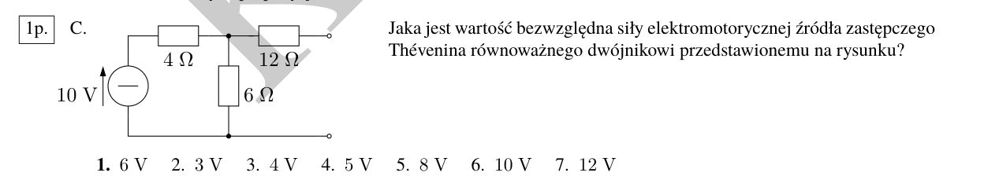
Rachunek. Rozwieramy zaciski: przez 12 Ω nie płynie prąd, więc = napięcie na 6 Ω w dzielniku z 4 Ω:
Kontrola. musi być mniejsze od 10 V i większe od połowy (bo 6 > 4) — odpowiedzi 8 V i 10 V odpadają bez liczenia. Dystraktor 4 V to dzielnik z zamienionymi oporami.
Gdyby pytano też o : R_T = (4 ∥ 6) + 12 = 2,4 + 12 = 14,4 Ω, J_N = 6/14,4 = 0,42 A.
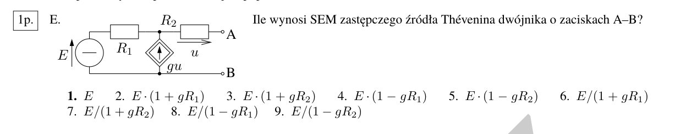
Treść. Dwójnik: E, R1, R2 i źródło sterowane gu równolegle do wyjścia; pytanie o .
Rachunek. Rozwieramy A–B: przez nie płynie prąd, więc napięcie u na źródle sterowanym = 0, więc — źródło sterowane gaśnie. Zostaje E i w oczku bez prądu, czyli .
Dlaczego to ważne. To zadanie uczy najważniejszej rzeczy o źródłach sterowanych: ich wartość może zniknąć sama, gdy wielkość sterująca zeruje się w warunkach zadania (tu: przy rozwarciu u → 0). Dystraktory , , to wynik „policzenia” źródła, które w tych warunkach nie działa.
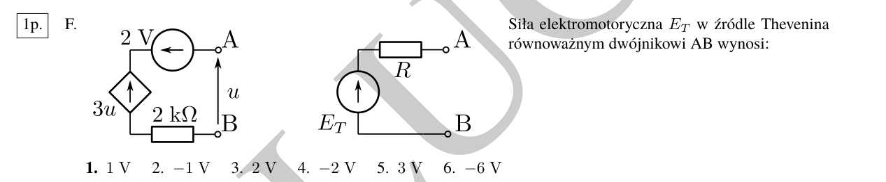
Treść. Dwójnik: źródło 2 V, źródło sterowane 3u i opór 2 kΩ w jednej gałęzi między zaciskami A–B; u jest napięciem między B i A. Pytanie: „Siła elektromotoryczna w źródle Thévenina równoważnym dwójnikowi AB wynosi:”
Rachunek. Zaciski A–B są rozwarte, więc w oczku nie płynie prąd () — spadek na 2 kΩ wynosi zero i całe napięcie u powstaje na źródłach:
A ponieważ (napięcie stanu jałowego), E_T = 1 V.
Dlaczego to zadanie jest „na 10 sekund”. Nie trzeba ani razu użyć : w stanie jałowym nie ma prądu, więc żaden opór nie wnosi napięcia, a źródło sterowane ma wartość 3u zależną od szukanego napięcia. Jedno równanie z jedną niewiadomą u i koniec. Dystraktory −1 V, 2 V, −2 V, 3 V, −6 V to wyniki pominięcia źródła 3u (±2 V), odwrócenia znaku (−1 V) albo podstawienia u = 2 V zamiast rozwiązania równania (3 V, 6 V).
Zadania z „układem równań na samo u”
Gdy obwód zawiera źródło sterowane wielkością, której szukasz (u, i), pisz równanie na tę wielkość — nie próbuj liczyć „po kolei” jak w obwodzie bez źródła sterowanego. W stanie jałowym (rozwarte zaciski) i w stanie zwarcia to równanie jest liniowe i rozwiązuje się w jednej linijce.
5.3 Zadania: wydajność prądowa Nortona
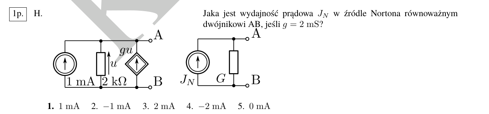
Treść. Dwójnik: 1 mA źródło prądowe, 2 kΩ, źródło sterowane gu (g = 2 mS). Pytanie: .
Rachunek. Zwieramy A–B. Opór 2 kΩ jest bezpośrednio między A i B, więc po zwarciu , a źródło sterowane daje — znika niezależnie od g. Zostaje samo 1 mA, którego prąd nie ma innej drogi niż zwarcie:
Kontrola. Wartość g = 2 mS jest w zadaniu po to, żeby skusić do liczenia g·u. Dystraktory 2 mA i −2 mA to wynik policzenia g·u przy u wziętym z osobno rozwiązanego obwodu.
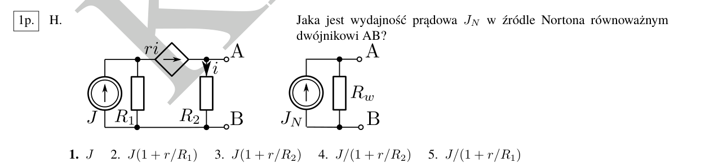
Rachunek. Zwarcie A–B bocznikuje , więc prąd i przez wynosi zero → źródło r·i daje 0 V, czyli w obwodzie zwarciowym jest kawałkiem przewodu. To zwierają węzeł lewy z A, więc też jest zwarty i cały prąd J płynie przez zwarcie: .
Kontrola. Dystraktor powstaje z założenia, że przez romb płynie prąd zwarcia — a przecież jest on sterowany prądem i gałęzi, którą zwarcie zeruje.
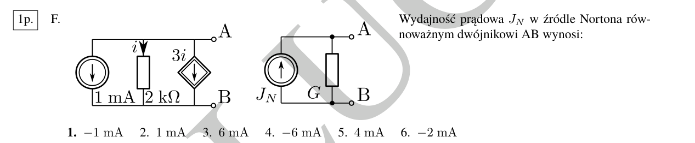
Treść. Dwójnik: 1 mA źródło prądowe, 2 kΩ z prądem i, źródło sterowane 3i równolegle. Pytanie: „Wydajność prądowa w źródle Nortona równoważnym dwójnikowi AB wynosi:”
Rachunek. Zwieramy A–B. Zwarcie bocznikuje 2 kΩ, więc napięcie na nim wynosi zero, a co za tym idzie . Wtedy źródło sterowane daje — gaśnie. W obwodzie zwarciowym zostaje tylko źródło 1 mA, którego prąd nie ma innej drogi niż zwarcie:
Dlaczego klucz zaznacza oba znaki. jest wielkością skierowaną — jej znak zależy od umowy, który zacisk traktujemy jako „źródło” (A czy B). Klucz dopuszcza więc 1 mA i −1 mA. To ważna cecha tych testów: przy wielkościach kierunkowych zawsze sprawdź oba znaki, zanim uznasz, że żadna odpowiedź nie pasuje.
Dystraktory. 6 mA i −6 mA to wynik policzenia 3i przy i wziętym z innego stanu obwodu (np. i = 2 mA z napięcia U_AB = 4 V). 4 mA — dodanie prądów. −2 mA — pomylenie z . Wszystkie one zakładają, że źródło sterowane „działa” także przy zwarciu, co jest błędem.
Reguła rodziny Thévenin/Norton
Zwarcie → napięcia sterujące = 0. Rozwarcie → prądy gałęzi wiszących = 0. W obu przypadkach źródło sterowane „gaśnie” i obwód robi się trywialny. Zanim napiszesz pierwsze równanie, zapytaj: co to zwarcie (rozwarcie) wyłącza?
5.4 Zadania: moc maksymalna i moc dysponowana
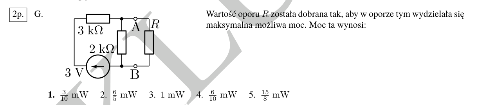
Rachunek. R_T = 3 kΩ ∥ 2 kΩ = 1,2 kΩ. = napięcie rozwarcia na 2 kΩ:
Wzór skrócony dla układu „źródło + opór szeregowy + opór równoległy”
Sprawdzenie na tym zadaniu: 9 · 2000 / (4 · 3000 · 5000) = 0,3 mW ✔. Oszczędza pół minuty, bo nie trzeba liczyć i osobno.
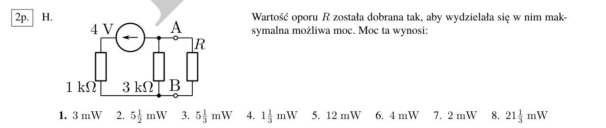
Rachunek. E = 4 V, R_s = 1 kΩ, R_p = 3 kΩ:
albo klasycznie: E_T = 4·3/4 = 3 V, R_T = 1 kΩ ∥ 3 kΩ = 0,75 kΩ, .
Kontrola. musi być mniejsza od mocy przy zwarciu — i jest (3 mW). Dystraktory 12 mW i 16 mW to moce nieosiągalne dla odbiornika.
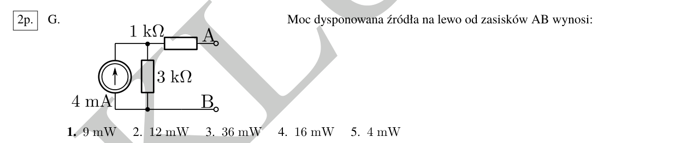
Rachunek. Źródło prądowe 4 mA i 3 kΩ tworzą źródło rzeczywiste: E_T = J·R_1 = 4 mA · 3 kΩ = 12 V, R_T = 3 kΩ + 1 kΩ = 4 kΩ (opór 1 kΩ jest szeregowo z zaciskami). Zatem
Kontrola. Dystraktor 12 mW to (moc przy zwarciu), 36 mW — . Moc dysponowana jest zawsze 4 razy mniejsza od mocy przy zwarciu.
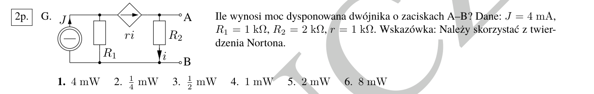
Treść. J = 4 mA, R1 = 1 kΩ, R2 = 2 kΩ, r = 1 kΩ, źródło sterowane ri; wskazówka: „Należy skorzystać z twierdzenia Nortona”.
Rachunek (zgodnie ze wskazówką). Zwarcie A–B: zwarty → → źródło ri gaśnie → J_N = J = 4 mA. = opór widziany z AB po wyzerowaniu J (rozwarte): przez i … jest równolegle do J (rozwarcie), więc R_T = R_1 = 1 kΩ — i stąd
Kontrola. Dystraktory 1/4 mW, 1/2 mW, 1 mW, 2 mW, 8 mW to wynik pomylenia z albo przyjęcia .
Trzy moce, które łatwo pomylić
| Wielkość | Wzór | Kiedy |
|---|---|---|
| moc przy zwarciu | odbiornik | |
| moc dysponowana = maksymalna | odbiornik | |
moc przy dowolnym R |
dowolne R |
W zadaniach „dobierz R, by moc była maksymalna” zawsze chodzi o środkowy wiersz.
5.5 Zadanie: czwórnik — co jest zawsze prawdziwe
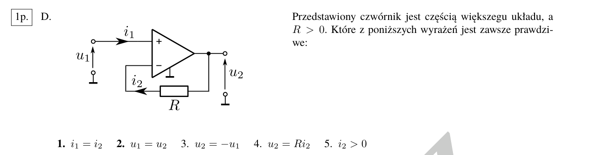
Treść. Wzmacniacz operacyjny jako czwórnik: wejście + z napięciem u1 i prądem i1, wyjście u2, sprzężenie przez R z prądem i2. „Które z poniższych wyrażeń jest zawsze prawdziwe (R > 0)?” 1. ; 2. ; 3. ; 4. ; 5. i2 > 0.
Omówienie. Wzmacniacz pracuje w zamkniętej pętli: , a do wejść nie wpływa prąd:
- 1 — prawda: prąd wejściowy
i1płynie dalej przezR(do wejścia wzmacniacza nic nie wpływa), więc . - 2 — prawda dla wtórnika (wyjście połączone z wejściem
−): i , więc . - 3 — byłoby prawdą dla układu odwracającego (wejście
+uziemione) — tu nie. - 4 — fałsz: przez
Rpłyniei2, aleu2to napięcie wyjścia, a nie spadek naR. - 5
i2 > 0— fałsz: kierunek zależy od stanu układu, nie jest „zawsze”.
Wniosek. Dwa zdania do zapamiętania: i . Z nich wynika cała analiza każdego układu z wzmacniaczem operacyjnym na tym kolokwium.
6. Elementy nieliniowe, dioda, moc w obwodach
6.1 Teoria
Element nieliniowy — charakterystyka i(u) nie jest prostą. Opór statyczny (sieczna od początku układu), opór dynamiczny (nachylenie stycznej). Punkt pracy to przecięcie charakterystyki elementu z charakterystyką źródła (prostą obciążenia).
Dioda idealna (zwarciowo-rozwarciowa) ma dwa stany: przewodzenie (, dowolny prąd dodatni) i zaporowy (, dowolne napięcie ujemne). Dioda rzeczywista: u ≈ 0,6–0,7 V przy przewodzeniu.
Moc w elemencie: ; dla rezystora . Bilans mocy (Tellegen): moc oddawana przez źródła = moc pobierana przez odbiorniki + straty.
Zamiana gwiazda ⇄ trójkąt (gdy nie da się zwinąć ani szeregowo, ani równolegle):
6.2 Zadanie: kiedy prawo Ohma nie obowiązuje
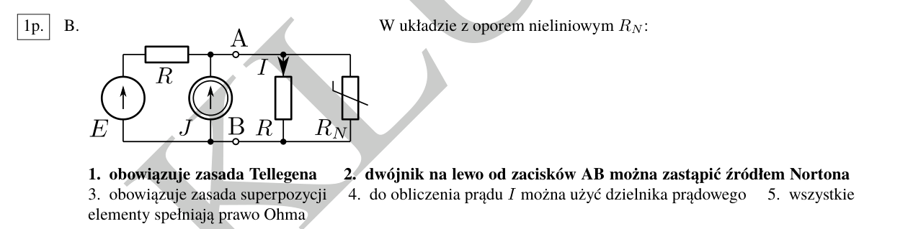
Treść. „W układzie z oporem nieliniowym RN:” 1. obowiązuje zasada Tellegena; 2. dwójnik na lewo od zacisków AB można zastąpić źródłem Nortona; 3. obowiązuje zasada superpozycji; 4. do obliczenia prądu I można użyć dzielnika prądowego; 5. wszystkie elementy spełniają prawo Ohma.
Omówienie.
- 1 — Tellegen (bilans mocy) obowiązuje zawsze, także dla elementów nieliniowych ✔.
- 2 — twierdzenie Nortona dotyczy dwójnika liniowego: część na lewo od AB jest liniowa (same
R,E,J), więc wolno ją zastąpić źródłem Nortona ✔. Element nieliniowy jest odbiornikiem, a nie częścią zastępowaną. - 3 — superpozycja nie obowiązuje w obwodzie z elementem nieliniowym ✘ (to najczęstszy błąd).
- 4 — dzielnik prądowy zakłada liniowe opory ✘.
- 5 — oczywisty fałsz: to jest „opór nieliniowy” ✘.
Wniosek. Rozróżniaj: twierdzenia o dwójniku (Thévenin, Norton) stosuje się do liniowej części obwodu, a zasada superpozycji wymaga liniowości całego obwodu. Tellegen — zawsze.
6.3 Zadanie: moc w połączeniach (2 pkt, rachunkowe)
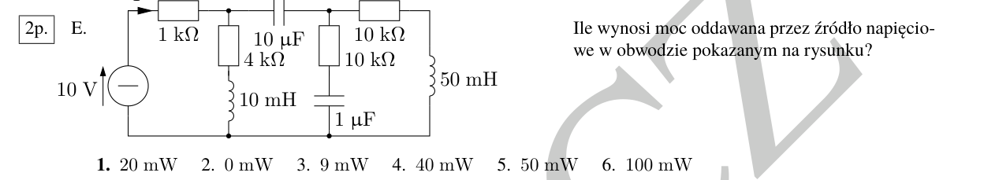
Treść. „Ile wynosi moc oddawana przez źródło napięciowe w obwodzie pokazanym na rysunku?” Obwód: 10 V, opory 1 kΩ, 4 kΩ, 10 kΩ, 10 kΩ oraz 10 µF, 1 µF, 10 mH, 50 mH.
Rachunek. Obwód zasilany napięciem stałym — po ustaleniu się stanu obowiązuje:
- Kondensator
10 µFstoi szeregowo w górnym przewodzie → jego rozwarcie odcina całą prawą część obwodu (10 kΩ,50 mH,1 µFi prawe10 kΩnie przewodzą). - Cewka
10 mHw lewej gałęzi zwiera się do przewodu. - Zostaje jedno oczko:
10 V→1 kΩ→4 kΩ→ szyna. Prąd:I = 10 V / 5 kΩ = 2 mA.
Moc oddawana przez źródło:
Omówienie odpowiedzi. 100 mW (opcja 6) to 10 V · 10 mA, czyli wynik pominięcia 4 kΩ (sam 1 kΩ). 50 mW — pominięcie 1 kΩ. 40 mW — potraktowanie obu oporów jako równoległych. 9 mW i 20 mW różnią się tym, czy prawa część obwodu przewodzi — a nie przewodzi, bo 10 µF jest rozworem dla prądu stałego. Odpowiedź 0 mW (opcja 2) byłaby prawdą tylko dla obwodu, w którym źródło jest odcięte kondensatorem szeregowo — tu kondensator jest w innej gałęzi.
Najdroższy błąd przy prądzie stałym
„Liczę impedancję 1/(jωC)” — w obwodzie prądu stałego , więc 1/(jωC) → ∞ (rozwarcie), a jωL → 0 (zwarcie). Nie ma tu żadnej fazy ani modułu — jest tylko pytanie, które gałęzie przewodzą. Zanim zaczniesz liczyć, wykreśl wszystkie gałęzie odcięte kondensatorami i zwarcij te z cewkami; dopiero potem licz opór zastępczy.
6.4 Zadanie: mostek Wheatstone'a — metoda (w Teście 1 jako „pomiar”)
W Testach 1 mostek pojawia się rzadko (5 pytań w całej bazie, głównie w Teście 2), ale jego teoria jest potrzebna do zadań z oporem zastępczym, gdy układ jest mostkiem niezrównoważonym:
- równowaga: (galwanometr wskazuje zero, bo ),
- niezrównoważony: trzeba użyć twierdzenia Thévenina dla gałęzi galwanometru albo przekształcenia trójkąt → gwiazda. To najczęstsza pułapka zadań „jakie jest natężenie prądu w przekątnej mostka” (
19Z_A_1 · G).
7. Poprawy (klucze A_2) — sześć pytań, których nie ma w wersji podstawowej
Każdy termin ma dwie wersje: podstawową (A_1) i poprawkową (A_2). Pytania się powtarzają (ten sam archetyp), ale kilka wariantów z poprawy jest unikalnych — i właśnie one najczęściej zaskakują. Poniżej po jednym z każdej poprawy.
7.1 Która charakterystyka opisuje opór nieliniowy (20Z_A_2 · B)
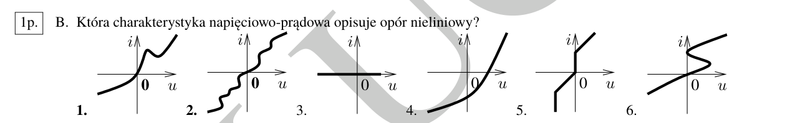
Treść. Sześć charakterystyk i(u). Pytanie: „Która charakterystyka napięciowo-prądowa opisuje opór nieliniowy?”
Omówienie. Opór nieliniowy to element rezystancyjny (bezinercyjny, bez własnej SEM): jego charakterystyka jest jednoznaczna (jednej wartości u odpowiada jedna wartość i), ciągła i przechodzi przez początek układu (przy u = 0 płynie i = 0 — nie ma w nim źródła energii). Warunki te spełniają charakterystyki 1 (krzywa z „garbem”) i 2 (schodkowa, monotoniczna).
Dlaczego pozostałe nie:
- 3 — pozioma prosta
i = const: to charakterystyka idealnego źródła prądowego (prąd nie zależy od napięcia). - 4 — krzywa nieprzechodząca przez początek układu: przy
u = 0płynie prąd różny od zera, czyli element ma w sobie SEM (jest czynny). - 5 — pionowy skok w zerze: charakterystyka niejednoznaczna w
u = 0(nieskończona konduktancja) — to nie opór. - 6 — krzywa zawinięta: jednej wartości
uodpowiada kilka wartościi(element z pamięcią, histerezą albo rezystancją ujemną).
Wniosek. Trzy słowa do zapamiętania: jednoznaczna, ciągła, przez zero. One rozstrzygają całą szóstkę.
7.2 Wzmacniacz operacyjny — cztery opory, dwa istotne (21Z_A_2 · D)
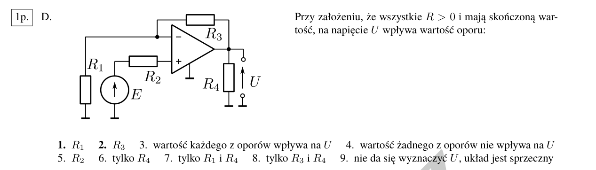
Treść. „Przy założeniu, że wszystkie R > 0 i mają skończoną wartość, na napięcie U wpływa wartość oporu:” 1. R1; 2. R3; 3. każdego; 4. żadnego; 5. R2; 6. tylko R4; 7. tylko R1 i R4; 8. tylko R3 i R4; 9. „nie da się wyznaczyć U, układ jest sprzeczny”.
Rachunek. Wzmacniacz pracuje w zamkniętej pętli, więc u_+ = u_−, a do wejść nie wpływa prąd (i_+ = i_− = 0):
R2jest włączony szeregowo z wejściem+— nie płynie przez niego prąd, więc nie ma na nim spadku:u_+ = E. (To samo dotyczyR4przy wyjściu — idealne wyjście wymusza napięcie niezależnie od obciążenia.)- Wejście
−jest w dzielniku złożonym zR1(do masy) iR3(do wyjścia), więc
Zatem na U wpływają tylko R1 i R3 — odpowiedzi 1 i 2.
Dlaczego to jest ważne. Klasyczny wzór nieodwracającego wzmacniacza (1 + R3/R1) wyprowadza się w trzech linijkach — ale tylko wtedy, gdy najpierw uzasadnisz, że R2 i R4 nic nie wnoszą. Odpowiedzi 3 i 4 („każdy” / „żaden”) to skrajności, opcje 5–8 — wynik „policzenia” dzielników na oporach, przez które prąd nie płynie.
7.3 Prąd w węźle — wariant z poprawy (22Z_A_2 · E)
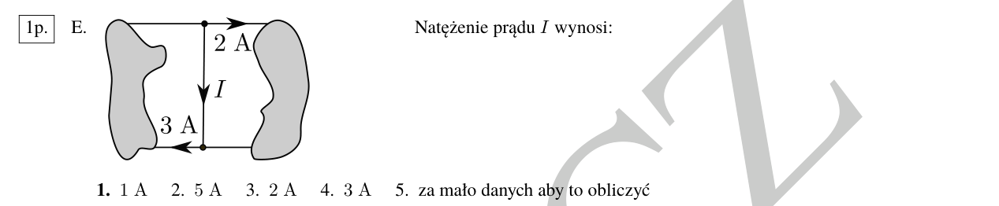
Rachunek. Dwa wymuszone prądy (2 A i 3 A) są doprowadzone do układu z przeciwnych stron, a I płynie gałęzią poprzeczną. Bilans węzła daje różnicę:
Dlaczego nie 5 A. Sumę 2 + 3 = 5 dostajesz tylko wtedy, gdy oba prądy wpływają do tego samego węzła — a tutaj jeden wpływa, drugi wypływa (patrz groty). To najczęstsza pomyłka w tej rodzinie: różnica czy suma? Odpowiedź daje zawsze jeden węzeł i kierunki grotów, nigdy „intuicja”.
7.4 Bramka prądowa w praktyce (23Z_A_2 · C)
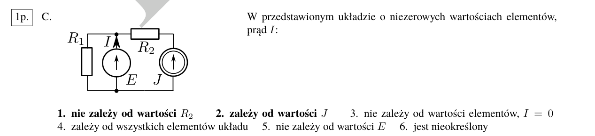
Treść. R1 po lewej, źródło E w środku (z prądem I), R2 u góry, źródło J po prawej. Pytanie: „prąd I:” 1. nie zależy od wartości R2; 2. zależy od wartości J; 3. nie zależy od elementów, I = 0; 4. zależy od wszystkich; 5. nie zależy od E; 6. jest nieokreślony.
Rachunek. Prąd J wpływa do prawego węzła i cały musi przepłynąć przez R2 do węzła środkowego (bo R2 stoi szeregowo z idealnym źródłem prądowym J), a dalej przez źródło E i R1 do szyny:
Widać więc: I zależy od J (opcja 2 ✔) i nie zależy od R2 (opcja 1 ✔), bo R2 jest w bramce prądowej — jego wartość zmienia tylko rozkład napięć wewnątrz gałęzi. Opcja 5 („nie zależy od E”) jest fałszywa (składnik E/R1), opcja 3 fałszywa (I ≠ 0), 4 i 6 fałszywe.
To jest dokładnie ta sama reguła, co w §3.4 — tyle że tu pytają o prąd w bramce, a nie o napięcie na źródle prądowym. Reguła jest jedna: szeregowo z idealnym źródłem prądowym nic nie wpływa na prądy poza gałęzią.
7.5 Bilans mocy zamiast charakterystyki (24Z_A_2 · B)
Treść. „Źródło dostarcza 10 W mocy, a opór nieliniowy pobiera 6 W. Moc pobieraną przez opór R można obliczyć na podstawie:” 1. zasady Tellegena; 2. zasady kompensacji; 3. zasady superpozycji; 4. do wyznaczenia mocy niezbędna jest wartość oporu R.
Omówienie. W obwodzie mamy trzy odbiorniki: R_N (6 W), R (szukane) i ewentualne straty — a źródło daje 10 W. Bilans mocy (zasada Tellegena) mówi, że suma mocy wszystkich elementów wynosi zero, więc
Bez zaglądania do charakterystyki R_N, bez superpozycji (ta wymaga liniowości — a obwód jest nieliniowy!) i bez wartości R (opcja 4 jest fałszywa: moc jest dana przez bilans, a nie przez U²/R).
Dlaczego pozostałe. „Zasada kompensacji” dotyczy zastąpienia gałęzi źródłem napięciowym — nie służy do bilansu mocy. „Superpozycja” w obwodzie z elementem nieliniowym nie obowiązuje. To pytanie świetnie pokazuje, po co w ogóle jest Tellegen: daje odpowiedź bez modelu elementu.
7.6 Dwójnik bezźródłowy — pytanie „sporne” (25Z_A_2 · H)
Treść. Ten sam zestaw pięciu dwójników co w 20L_A_1 · G (§4.3): 1. R ze źródłem sterowanym ku; 2. dioda D ze źródłem E > 0; 3. R ze źródłem E > 0; 4. dioda D ze źródłem E > 0; 5. źródło E > 0 ze źródłem ri; 6. „żaden nie jest bezźródłowy”.
Omówienie. Dwa kryteria, które dają różne odpowiedzi:
- Kryterium „zero na charakterystyce” (najczęściej używane w podręcznikach): dwójnik jest bezźródłowy, gdy jego charakterystyka
i(u)przechodzi przez początek układu — czyli nie ma w nim niezależnego źródła energii. Spełnia je dwójnik 1 (u = 0→i = 0, bo źródłokuteż daje wtedy zero). Dwójki 2–5 zawierają źródłoE > 0, więc ich charakterystyki są przesunięte i odpowiedź brzmiałaby „2, 3, 4, 5 nie są bezźródłowe”. - Kryterium „żadnego źródła w środku”: wtedy bezźródłowy jest tylko dwójnik bez żadnego źródła — a tu żaden (poprawna byłaby odpowiedź 6).
Klucz zaznacza 1 i 2 — i tak samo robi klucz 20L_A_1 · G z identycznym zestawem rysunków. To jedna z niespójności w kluczach, którą trzeba znać, a nie „naprawiać”: przy rysunkach w tych dwóch plikach odpowiedź 6 jest definicyjnie uzasadniona, a klucz dopuszcza 1 i 2. Praktyczny wniosek na egzamin: zaznacz to, co wynika z rysunku, i pamiętaj, że w tej rodzinie klucze są niejednoznaczne — to jedno z nielicznych pytań, w których warto po kolokwium poprosić o wyjaśnienie.
8. Zestawienie: archetypy zadań Testu 1
| Litera | Co tam prawie zawsze jest | Metoda w jednym zdaniu |
|---|---|---|
| A | opór zastępczy ze źródłem sterowanym (14×) | wpisz prądy gałęzi, dodaj z odpowiednim znakiem, podziel u/i |
| B | punkt pracy elementu nieliniowego (15×) | znajdź punkt pracy, potem , |
| C | „od czego zależy napięcie na źródle prądowym” (13×) | potencjały ustalają źródła napięciowe, prądy — prądowe |
| D | napięcie U w układzie / wzmacniacz (12×) |
dzielnik albo , |
| E | prąd w węźle, PPK (11×) | jedno równanie KCL; najpierw sprawdź, czy układ nie jest sprzeczny |
| F | superpozycja — jedna składowa (10×) | zeruj pozostałe źródła (E → zwarcie, J → rozwarcie), licz jedną składową |
| G | moc maksymalna / dysponowana (9×) | , potem |
| H | dioda / Thévenin–Norton / dwójnik (4+3×) | dwa stany diody; ze zwarcia, z rozwarcia |
Indeks wszystkich pytań z omówionych archetypów jest w Aneksie (klucz · pytanie → numer odpowiedzi prawidłowej).
Każde pytanie Testu 1 z 17 kluczy w repozytorium (plik · litera → numery odpowiedzi prawidłowych w kluczu; dwa lub trzy numery oznaczają, że klucz dopuszcza więcej niż jedną odpowiedź).
19Z_A_1 · A→1, B→1, C→1, D→1,2,3, E→1, F→1, G→1
20L_A_1 · A→1, B→1, C→1,2, D→1, E→1, F→1, G→1, H→1
20L_A_2 · A→1,2, B→1,2, C→1, D→1, E→1, F→1, G→1
20Z_A_1 · A→1, B→1, C→1,2, D→1, E→1, F→1, G→1
20Z_A_2 · A→1, B→1, C→1,2, D→1, E→1, F→1, G→1
21L_A_1 · A→1,2, B→1, C→1,2,3, D→1,2, E→1, F→1, G→1, H→1
21L_A_2 · A→1, B→1, C→1,2,3, D→1, E→1, F→1, G→1, H→1
21Z_A_1 · A→1, B→1, C→1,2, D→1, E→1, F→1, G→1, H→1
21Z_A_2 · A→1,2, B→1, C→1,2, D→1,2, E→1, F→1, G→1, H→1
22Z_A_1 · A→1, B→1, C→1,2, D→1, E→1, F→1, G→1, H→1
22Z_A_2 · A→1, B→1, C→1, D→1, E→1, F→1, G→1, H→1
23Z_A_1 · A→1, B→1, C→1,2, D→1, E→1, F→1, G→1, H→1
23Z_A_2 · A→1, B→1, C→1,2, D→1, E→1, F→1, G→1, H→1
24Z_A_1 · A→1, B→1, C→1, D→1,2, E→1, F→1, G→1, H→1
24Z_A_2 · A→1, B→1, C→1, D→1, E→1, F→1, G→1, H→1
25Z_A_1 · A→1, B→1, C→1,2, D→1, E→1, F→1, G→1, H→1
25Z_A_2 · A→1, B→1, C→1,2, D→1, E→1, F→1, G→1, H→1
Razem: 132 pytań z 17 plików kluczy.
Gdzie szukać reszty
kompendium/kompendium.pdf(44 strony) — cała teoria: od konwencji i praw Kirchhoffa, przez metrologię, mostek i oscyloskop, do 18 rozwiązanych zadań i aneksu z 252 pytaniami.szybkie/szybkie.pdf(14 stron) — technika egzaminacyjna: budżet czasu, kolejność rozwiązywania, archetypy w wersji „policz w 60 sekund”.- Ten dokument — teoria obwodów z omówionymi zadaniami z kluczy: każdy rozdział ma wycinek oryginalnego pytania, pełną listę opcji i uzasadnienie, dlaczego zaznaczona odpowiedź jest prawidłowa, a pozostałe nie.